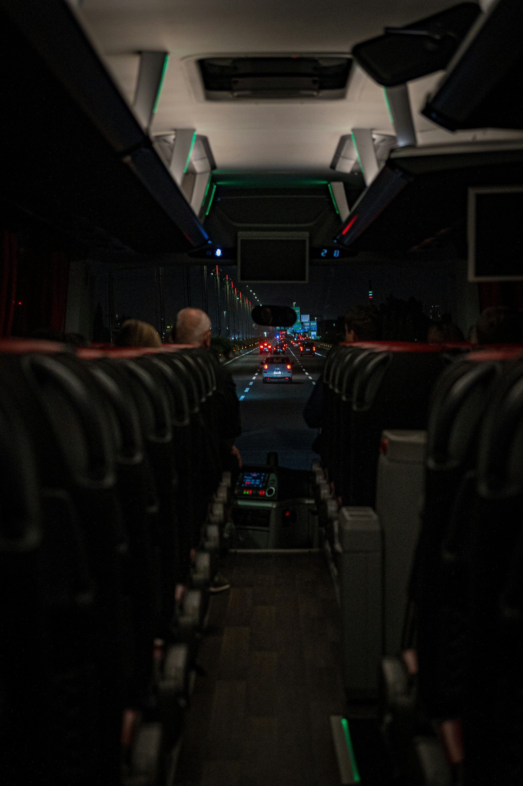
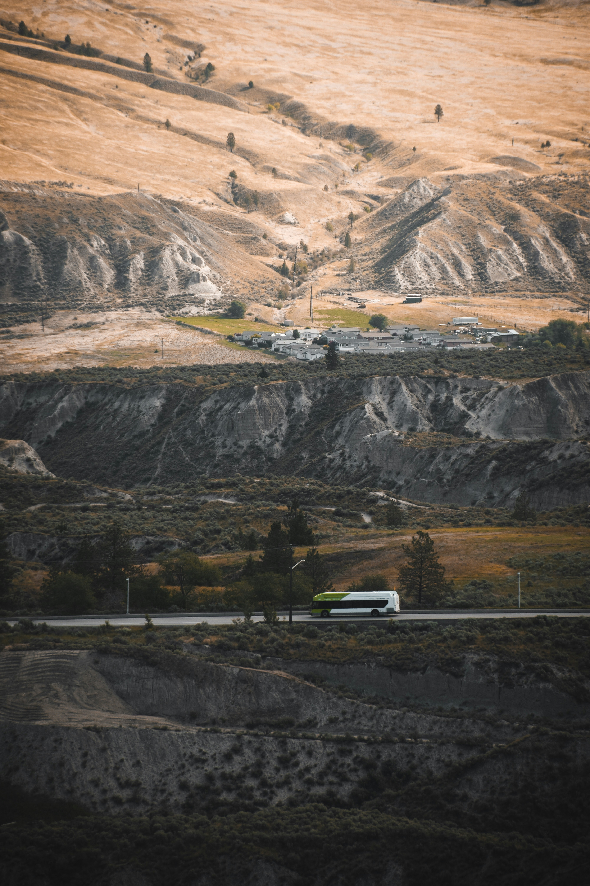
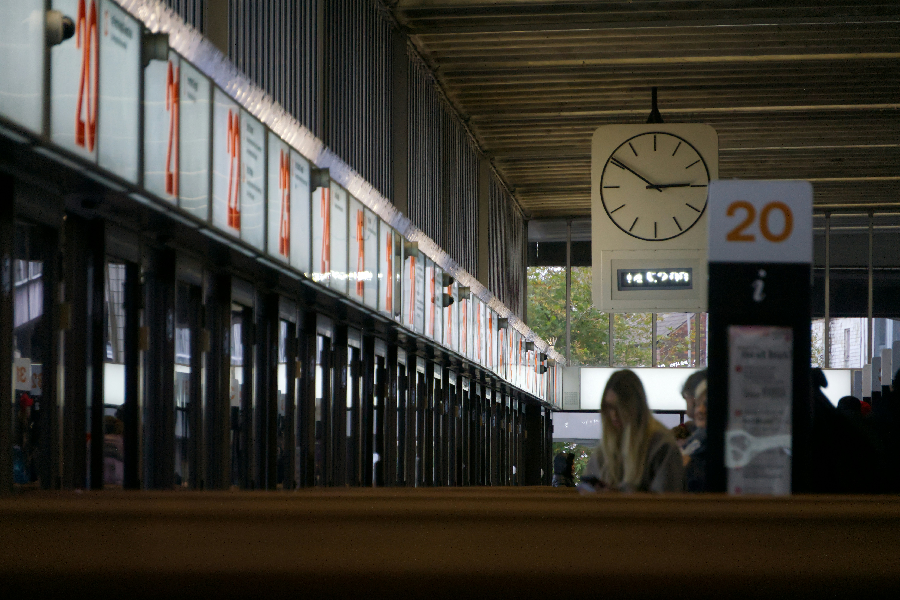

Nuevo servicio
15 may 2026
Servicio nocturno a Buenos Aires
Desde el 1° de junio, dos salidas nocturnas semanales con coche-cama y desayuno incluido.
Leer más →Centro de Transporte · Mendoza
Horarios, destinos y servicios del Centro de Transporte de Mendoza en un solo lugar.
Cinco líneas que conectan Mendoza con el país, la cordillera y la vida universitaria.
Planificá tu viaje, conocé los servicios de la terminal y ubicate con el plano interactivo.
Tres pasos para que tu viaje arranque sin vueltas.
Buscá entre 5 líneas de servicio y más de 50 paradas.
Salidas en tiempo real y frecuencias por día.
Guardá tu ruta y recibí alertas de servicio.
Avisos, cambios de servicio y novedades de la terminal.

Desde el 1° de junio, dos salidas nocturnas semanales con coche-cama y desayuno incluido.
Leer más →
Por obras en la Ruta 7, las salidas hacia Uspallata se reprograman de lunes a viernes.
Ver horarios actualizados →
Conectate al instante con la red TIM-Libre desde cualquier sector de la terminal.
Leer más →